2023年北京市中考历史试卷 原卷解析
2023年北京市中考历史试卷
参考答案与试题解析
一、本部分共20题，每题1.5分，共30分。在每题列出的四个选项中，选出最符合题目要求的一项。
1．（1.5分）考古发现是了解史前社会历史的重要依据。以下材料可作为我国原始农业发展证据的是（ ）
A． 北京人制作的石器B．
北京人制作的石器B． 河姆渡遗址出土的稻谷
河姆渡遗址出土的稻谷
C． 农耕生活想象图D．
农耕生活想象图D． 曲辕犁模型
曲辕犁模型
【分析】本题主要考查了我国原始农业发展的相关依据，注意图片内容的识读。
【解答】河姆渡原始居民主要种植水稻。我国是世界上最早栽培水稻的国家，故B符合题意，主要靠采集为生，排除A，不能作为研究历史的一手史料；曲辕犁模型反映的是唐朝的农业生产工具，排除D。
故选：B。
【点评】本题主要考查学生综合运用所学知识解决问题的能力。理解并识记我国原始农业发展的相关依据。
2．（1.5分）如图示意图表现的是中国古代某一思想家的主张，这位思想家是（ ）

A．老子B．孔子C．墨子D．韩非
【分析】本题主要考查了孔子的思想观点与政治主张，注意题干图示的识读。
【解答】结合所学知识可知，孔子是春秋后期鲁国人，他的核心思想是“仁”，即要有爱心和同情心，勿施于人”“己欲立而立人，将“仁”作为处理人与人关系的最高行为准则和道德规范，孔子在政治上推崇西周的制度，要求统治者爱惜民力。他反对苛政，使人民心悦诚服。孔子的学说对中国古代文化的发展有非常重要的影响。故B符合题意，排除A、非攻”；韩非主张“以法治国”。
故选：B。
【点评】本题主要考查学生综合运用所学知识解决问题的能力。理解并识记孔子的思想观点与政治主张。
3．（1.5分）战国时期，铁制工具的使用进一步推广，使大量荒地得到开垦。开垦者缴纳赋税，新兴地主阶级逐渐壮大。同时，铁制工具在开挖河渠中的使用成就了大型水利工程。以上材料说明（ ）
A．生产工具的进步推动社会发展
B．铁制工具完全取代了木石工具
C．各国变法带来生产工具的改进
D．水利工程为国家统一创造条件
【分析】本题考查春秋战国时期铁器的使用和牛耕的推广，掌握相关的基础知识。
【解答】据题干“战国时期，铁制工具的使用进一步推广。开垦者缴纳赋税，新兴地主阶级逐渐壮大，铁制工具在开挖河渠中的使用成就了大型水利工程”可知，提高了社会生产力；题干材料说明生产工具的进步推动社会发展、各国变法带来生产工具的改进，排除BCD。
故选：A。
【点评】本题考查春秋战国时期铁器的使用和牛耕的推广，考查学生的理解和分析能力，解题关键是知道题干材料说明生产工具的进步推动社会发展。
4．（1.5分）《史记》记载：秦始皇陵地宫中“以水银（汞）为百川江河大海”。考古工作者对皇陵遗址及周边进行汞含量测定，其结果（见图）（ ）
①秦始皇北击匈奴有了考古证据
②秦始皇陵地宫位于外城墙之下
③该成果得益于考古学与化学的结合
④考古发现与文献记载可以相互印证

A．①②B．②③C．③④D．①④
【分析】本题考查秦朝巩固统一的措施，掌握相关的基础知识。
【解答】据题干“《史记》记载：秦始皇陵地宫中‘以水银（汞）为百川江河大海’。考古工作者对皇陵遗址及周边进行汞含量测定，秦陵附近汞含量很高，这表明该成果得益于考古学与化学的结合。故C符合题意、秦始皇陵地宫位于外城墙之下。
故选：C。
【点评】本题考查秦朝巩固统一的措施，考查学生的理解和分析能力，解题关键是知道题干材料表明该成果得益于考古学与化学的结合、考古发现与文献记载可以相互印证。
5．（1.5分）如图是一位同学绘制的某单元的知识结构示意图，其中①处应为（ ）

A．人口迁徙B．孝文帝改革
C．大运河的开通D．经济重心的南移
【分析】本题考查北方游牧民族的内迁，掌握相关的基础知识。
【解答】据图片并结合所学可知，三国两晋南北朝时期；边疆少数民族内迁促进了民族交融；孝文帝改革与江南地区的开发无关；大运河的开通是隋朝，排除C，不能说明经济重心南移。
故选：A。
【点评】本题考查北方游牧民族的内迁，考查学生的理解和分析能力，解题关键是知道图中①处应为人口迁徙。
6．（1.5分）某班进行“小钱币，大历史”跨学科主题学习，一位同学推测如图这枚吉语花钱（铸有吉祥词语，不流通）（ ）

A．工匠开始掌握青铜冶炼技术
B．这枚钱币采用圆形方孔形制
C．中央政府统一铸造了五铢钱
D．隋唐时期创立并完善科举制
【分析】本题考查科举制，掌握相关的基础知识。
【解答】图片吉语花钱中的文字是“状元及第”，进士科考中第一名的称为状元，进士科的设立。故D符合题意，不流通）的出现不早于隋唐时期的依据，不流通）的出现不早于隋唐时期的依据。
故选：D。
【点评】本题考查科举制，考查学生的理解和分析能力，解题关键是知道隋唐时期创立并完善科举制可作为吉语花钱（铸有吉祥词语，不流通）的出现不早于隋唐时期的依据。
7．（1.5分）如表两件唐代文物共同反映了当时（ ）

鎏金双狐纹双桃形银盘，构图方式来自于中亚地区，双狐双桃是中国传统图案 | 
鎏金双狮纹银碗，其纹饰既受到萨珊（今伊朗地区）艺术的影响 |
A．政治制度完备B．中外文化交流
C．诗歌创作繁荣D．民族关系和睦
【分析】本题考查唐朝中外文化交流，掌握相关的基础知识。
【解答】据题干“鎏金双狐纹双桃形银盘，构图方式来自于中亚地区，其纹饰既受到萨珊（今伊朗地区）艺术的影响，两件唐代文物都受到外来文化的影响。故B符合题意、诗歌创作繁荣，排除ACD。
故选：B。
【点评】本题考查唐朝中外文化交流，考查学生的理解和分析能力，解题关键是知道两件唐代文物共同反映了当时中外文化交流。
8．（1.5分）如图柱状图说明两宋时期（ ）

A．宰相权力的削弱B．纸币的大量发行
C．海外贸易的发展D．商标广告的出现
【分析】本题主要考查了宋朝的海外贸易与市舶司的设置，解题的关键是正确识读题干图片。
【解答】根据题干图示“两宋市舶司收入”可知，从977年到1159年，图示反映了宋朝时期海外贸易的繁荣发展，成为当时世界上从事海外贸易的重要国家；在主要港口设立市舶司。广州。贸易范围近至朝鲜，远达阿拉伯半岛和非洲东海岸；市舶司收入的图示，排除A，没有提及纸币的发行；题干只是说明宋朝市舶司收入情况，排除D。
故选：C。
【点评】本题主要考查学生综合运用所学知识解决问题的能力。理解并识记宋朝的海外贸易与市舶司的设置。
9．（1.5分）对如图示意图理解正确的是（ ）

A．郑成功从荷兰殖民者手中收复台湾
B．清政府推行垦荒政策，开发西南地区
C．清政府设置伊犁将军，巩固西北边疆
D．中央政府不断加强对台湾的有效管辖
【分析】本题主要考查了元朝和清朝管理台湾地区的措施，掌握相关基础知识。
【解答】元朝在澎湖岛设置了澎湖巡检司，负责管辖澎湖和琉球（今台湾）。1684年，隶属福建省，加强了台湾同祖国内地的联系；1885年。题干图示的这些措施加强了中央政府对台湾的有效管辖；题干反映的是中央政府加强台湾地区管理的措施，排除A，排除B，不是西北边疆。
故选：D。
【点评】本题主要考查学生综合运用所学知识解决问题的能力。理解并识记元朝和清朝管理台湾地区的措施。
10．（1.5分）某班举办中国人民反侵略斗争主题故事会，讲述了戚继光抗倭、义和团廊坊阻击战的故事，在这次活动中还可以讲述的故事有（ ）
①郑和下西洋
②李自成起义
③林则徐虎门销烟
④邓世昌英勇抗敌
A．①②B．②③C．①④D．③④
【分析】本题考查林则徐虎门销烟、甲午中日战争，掌握相关的基础知识。
【解答】“戚继光抗倭、义和团廊坊阻击战”都属于抗击外来侵略、邓世昌英勇抗敌属于抗击外来侵略；郑和下西洋，排除含有①②的ABC。
故选：D。
【点评】本题考查林则徐虎门销烟、甲午中日战争，考查学生的理解和分析能力，解题关键是知道林则徐虎门销烟、邓世昌英勇抗敌属于抗击外来侵略。
11．（1.5分）一位美国教育家于1919年5月来华，6月他在北京给女儿写信：想想我们国内14岁以上的孩子，有谁思考国家的命运？而中国学生负起政治改革运动的领导责任，这实在是一个了不起的国家。材料说明这场运动（ ）
A．以《新青年》作为重要阵地
B．以先进青年知识分子为先锋
C．遭到北洋政府的镇压
D．引发实业救国的热潮
【分析】本题主要考查了五四运动以及特点，解题的关键是正确识读题干材料。
【解答】根据题干“一位美国教育家于1919年5月来华……”可知，美国教育家所提及的运动是五四运动，有谁思考国家的命运，并使得商人和各界人士感到惭愧而加入他们的运动。”可知；五四运动是一场以先进青年知识分子为先锋，故B符合题意，不是《新青年》；题干材料没有涉及北洋政府是否镇压，排除CD。
故选：B。
【点评】本题主要考查学生综合运用所学知识解决问题的能力。理解并识记五四运动以及特点。
12．（1.5分）如图示意图标题应是（ ）
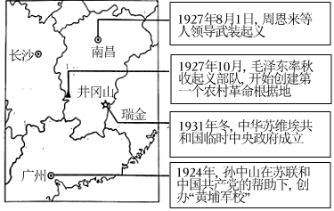
A．新民主主义革命的开始B．国共两党的第一次合作
C．从国共合作到国共对立D．反“围剿”斗争取得胜利
【分析】本题考查黄埔军校、南昌起义、秋收起义和井冈山革命根据地的建立、中华苏维埃共和国临时中央政府，掌握相关的基础知识。
【解答】据图片并结合所学可知，第一次国共合作期间，孙中山创办“黄埔军校”，蒋介石。第一次国共合作破裂、秋收起义，成立中华苏维埃共和国临时中央政府。故C符合题意，排除A，国民党一大的召开标志着国共两党第一次合作的实现；图片标题应是从国共合作到国共对立，排除D。
故选：C。
【点评】本题考查黄埔军校、南昌起义、秋收起义和井冈山革命根据地的建立、中华苏维埃共和国临时中央政府，考查学生的理解和分析能力，解题关键是知道图片标题应是从国共合作到国共对立。
13．（1.5分）某校学生考察了如图近代历史遗址，考察的主题为（ ）
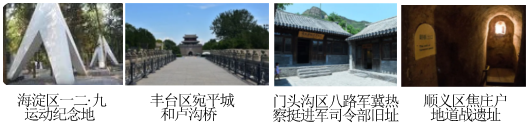
A．局部抗战的开始B．正面战场的抗战
C．北京地区的抗日斗争D．古都北平的和平解放
【分析】本题考查北京地区的抗日斗争，掌握相关的基础知识。
【解答】图片反映了抗日战争期间北京地区各地的抗日活动。故C符合题意，排除A，排除B，排除D。
故选：C。
【点评】本题考查北京地区的抗日斗争，考查学生的理解和分析能力，解题关键是知道图片反映了北京地区的抗日斗争。
14．（1.5分）竹枝词是一种以吟咏社会风土人情为主的文学体裁。20世纪初电车刚进入北京时，有竹枝词写道：“电车初试人都怕，说是将来肇祸多。”后来（电）车中称稳便，儿童指点陆行舟。”这说明（ ）
A．人们对新式交通工具由排斥到认可
B．沿海地区更易感受到社会生活变化
C．居民对电车破坏自然环境强烈不满
D．中国近代民族工业在夹缝中求生存
【分析】本题考查近代生活的变迁和社会习俗的变化，掌握相关的基础知识。
【解答】“电车初试人都怕，说是将来肇祸多”说明人们不敢坐电车，儿童指点陆行舟”说明人们习惯坐电车。故A符合题意，不能说明沿海地区更易感受到社会生活变化、中国近代民族工业在夹缝中求生存。
故选：A。
【点评】本题考查近代生活的变迁和社会习俗的变化，考查学生的理解和分析能力，解题关键是知道题干材料说明人们对新式交通工具由排斥到认可。
15．（1.5分）15世纪，欧洲学者、政治家甚至普通民众都流行写自传，这一时期自传作品的数量比之前近千年所写自传的总和还要多。这一历史现象反映出当时（ ）
A．租地农场开始出现B．人文主义思潮流行
C．绘画艺术蓬勃发展D．近代自然科学奠基
【分析】本题考查了文艺复兴运动。
【解答】A.租地农场出现于14世纪，排除A。
B.依据材料“15世纪，欧洲学者，这一时期自传作品的数量比之前近千年所写自传的总和还要多，15世纪是文艺复兴时期，写自传反映了重视人的价值的人文主义思想。
C.写自传与绘画无关，排除C。
D.近代自然科学诞生于16世纪，排除D。
故选：B。
【点评】本题考查了文艺复兴运动。侧重考查学生分析材料的能力。
16．（1.5分）马铃薯（土豆）原产于美洲。明代《农政全书》记载：“土芋，一名土豆；蔓生叶如豆，根圆如鸡卵，亦可蒸食。”我国出现这一记载的历史背景是（ ）
A．遣唐使来华B．中世纪城市兴起
C．封建庄园的衰落D．新航路的开辟
【分析】本题主要考查了新航路开辟的影响，掌握相关基础知识。
【解答】根据材料内容可知，明代《农政全书》有了马铃薯（土豆）的详细介绍，马铃薯有美洲走向世界；新航路开辟后，促进了物种的交流，D项正确，与明朝不符；中世纪城市兴起不会引发物种传播；封建庄园的衰落与材料马铃薯传播到中国无关。
故选：D。
【点评】本题主要考查学生综合运用所学知识解决问题的能力。理解并识记新航路开辟的影响。
17．（1.5分）英国国王原来有权以国家的名义借债。“光荣革命”后，由议会取代国王掌握了此项权力。这反映了当时英国（ ）
A．王权受到限制B．君主制度废除
C．推崇“君权神授”D．实行联邦制度
【分析】本题主要考查了英国的君主立宪制的确立等知识，掌握相关基础知识。
【解答】根据题干材料“英国国王原来有权以国家的名义借债。‘光荣革命’后，1688年英国发生“光荣革命”；1689年英国议会通过了《权利法案》，确立了议会至上的原则，A项正确，排除B项，排除C项，颁布了1787年美国宪法确立了联邦制共和制。
故选：A。
【点评】本题主要考查学生综合运用所学知识解决问题的能力。理解并识记英国的君主立宪制的确立等知识。
18．（1.5分）对如图形势图解读正确的是（ ）
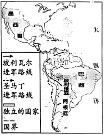
A．拉丁美洲独立运动发展B．明治维新发展资本主义
C．非暴力不合作运动开展D．非洲国家摆脱殖民统治
【分析】本题主要考查了拉丁美洲的民族解放运动，解题的关键是正确识读题干信息。
【解答】根据图片“墨西哥、巴西”的信息可知；根据“玻利瓦尔进军路线；1819年，打败西班牙军队、委内瑞拉和厄瓜多尔等地。圣马丁领导了阿根廷。圣马丁和玻利瓦尔被誉为南美的“解放者”；明治维新发生在日本，排除B项，地点不符；根据图片反映的历史事件是发生在拉丁美洲的民族解放运动，排除D项。
故选：A。
【点评】本题主要考查学生综合运用所学知识解决问题的能力。理解并识记拉丁美洲的民族解放运动。
19．（1.5分）19世纪下半叶，欧洲以产业工人为主体的社会主义组织致力于通过摧毁资本主义制度、在一切经济领域消灭剥削，实现人民大众的平等。这一现象出现的历史背景是（ ）
A．《人权宣言》的发表B．《拿破仑法典》的颁布
C．马克思主义的诞生D．俄国十月革命的胜利
【分析】本题主要考查了马克思主义的诞生与欧洲国际工人运动等知识，掌握相关基础知识。
【解答】根据材料“19世纪下半叶，欧洲以产业工人为主体的社会主义组织致力于通过摧毁资本主义制度，实现人民大众的平等，这一现象出现的历史背景是马克思主义的诞生，马克思。《共产党宣言》的发表。马克思主义是人民的理论。从此，国际共产主义运动兴起并蓬勃发展；《人权宣言》发表于1789年，与题干材料内容不符；《拿破仑法典》于1804年颁布实施，体现了自由平等和私有财产神圣不可侵犯等原则，反映的是资产阶级的意志，排除B项，与题干材料时间不符。
故选：C。
【点评】本题主要考查学生综合运用所学知识解决问题的能力。理解并识记马克思主义的诞生与欧洲国际工人运动等知识。
20．（1.5分）有学者指出，从全球视角来看，第一次世界大战后欧洲霸权开始削弱（ ）
A．爆发的原因B．复杂的进程C．战争的性质D．深远的影响
【分析】本题主要考查了第一次世界大战，重点掌握一战的背景、导火线、经过、性质以及影响。
【解答】根据材“第一次世界大战后欧洲霸权开始削弱，表现在三个方面：经济衰落。”可知，削弱了欧洲的实力；一战爆发的原因是帝国主义政治经济发展不平衡；一战的经过包括，开始是奥匈帝国对塞尔维亚宣战，排除B项，排除C项。
故选：D。
【点评】本题主要考查学生综合运用所学知识解决问题的能力。理解并识记第一次世界大战相关史实。
二、本部分共4题，共40分。
21．（10分）精准计时•社会需求•科技创新
材料一
| 利用滴水造成的水位变化计时。但是随着水位下降，流速变慢，计时有一定误差 | 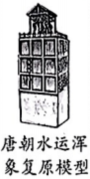 | 利用水力推动的轮轴机械报时，初步解决了计时误差问题 | 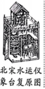 | 使用擒纵机械系统，计时更加精确。这一技术传入欧洲，推动了西方机械钟表的发展 |
（1）依据材料一，概括中国古代计时器的发展特点。结合所学，写出宋代另一项科技发明
材料二 早期的钟表用手工制作，造价不菲，主要功能是装饰和显示主人的身份。19世纪早期，在工厂和煤矿做工，按小时领取工资，机械化程度提高。某些工厂主致力于生产一种普通工人也能够消费的大众化钟表，并于19世纪中期在市，由于手表戴在手腕上可以直接看时间，其产量远远超过怀表和口袋表。
——摘编自刘军《瑞士》等
（2）依据材料二，概括钟表使用的趋势。分析19世纪早期到20世纪初期钟表行业发展的原因。
材料三 原子钟借助原子的天然振动精准计时
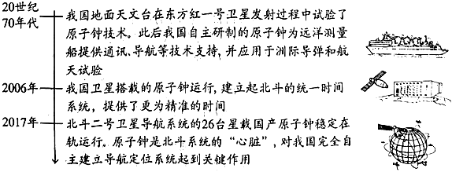
（3）依据材料三并结合所学，谈谈对我国原子钟发展的认识。
【分析】本题以三则文字、图片材料为背景依托，主要考查了中国古代计时器的发展特点、宋代的科技发明以及宋代科技成就的影响、钟表使用的趋势、19世纪早期到20世纪初期钟表行业发展的原因、对我国原子钟发展的认识等知识，掌握相关基础知识。
【解答】（1）依据材料一西汉铜漏可知，这种计时有一定误差，初步解决了计时误差问题，计时更加精确，推动了西方机械钟表的发展；技术不断创新。结合所学可知、指南针等，促进我国古代经济；对世界文明发展具有重要推动作用等。
（2）依据材料二“这一时期钟表生产从家庭作坊向规模化发展，机械化程度提高，并于19世纪中期在市？20世纪初期，其产量远远超过怀表和口袋表”概括可知；日益普及。根据材料“19世纪早期，在工厂和煤矿做工，计时对雇主和工人越来越重要，机械化程度提高，19世纪早期到20世纪初期钟表行业发展的原因有工业革命的开展；钟表生产技术和生产组织形式取得进步等。
（3）依据材料三“我国卫星搭载的原子钟运行，建立起北斗的统一时间系统。”
“北斗二号卫星导航系统的26台星载国产原子钟稳定在轨运行。原子钟是北斗系统的‘心脏’对我国完全自主建立导航定位系统起到关键作用”并结合所学可知，建立起北斗的统一时间系统；原子钟是北斗系统的“心脏”；我国的原子钟技术发展潜力巨大等。
故答案为：
（1）特点：计时越来越精准；技术不断创新。发明：指南针。影响：促进我国古代经济；对世界文明发展具有重要推动作用等。
（2）趋势：钟表更加实用；日益普及。原因：工业革命的开展；钟表生产技术和生产组织形式取得进步等。
（3）认识：我国运用原子钟技术，建立起北斗的统一时间系统；原子钟是北斗系统的“心脏”；我国的原子钟技术发展潜力巨大等。
【点评】本题主要考查学生综合运用所学知识解决问题的能力。理解并识记中国古代计时器的发展特点、宋代的科技发明以及宋代科技成就的影响、钟表使用的趋势、19世纪早期到20世纪初期钟表行业发展的原因、对我国原子钟发展的认识等知识。
22．（10分）中国式现代化，是中国共产党领导的社会主义现代化。
材料一 1840年鸦片战争以后，中国逐步成为半殖民地半封建社会，中华民族遭受了前所未有的劫难。为挽救民族危亡，各种政治力量轮番尝试，从学习西方技术到引进西方制度的探索，没有使中国走上现代化的强国之路。
（1）依据材料一并结合所学，分别指出1840﹣1919年中国在技术、制度方面探索的史实。总结这一时期现代化探索中的历史教训。
材料二 中国式现代化道路的实践历程
第一阶段 | | 第二阶段 | | 第三阶段 | | 第四阶段 |
1919﹣1949年 | 1949﹣1978年 | 1978﹣2012年 | 2012年以来 |
党团结带领人民，浴血奋战、百折不挠，建立了人民当家作主的中华人民共和国 | 党团结带领人民进行社会主义革命和建设，建立起独立的比较完整的工业体系和国民经济体系，为现代化建设奠定根本政治前提和宝贵经验、理论准备、物质基础 | 我国实现了从生产力相对落后的状况到经济总量跃居世界第二的历史性突破，为中国式现代化提供了充满新的活力的体制保证和快速发展的物质条件 | 党团结带领人民全面建成小康社会。党在已有基础上继续前进，不断实现理论和实践上的创新突破，成功推进和拓展了中国式现代化 |
（2）依据材料二并结合所学，写出1949年以后；中国共产党为推进中国式现代化在经济方面实行的政策或措施。概括中国式现代化实践历程的特点。
材料三 中国式现代化与西方现代化的比较
| 西方现代化 | 中国式现代化 |
角度一 | 发展道路：走殖民扩张的道路相关史实：① 欧洲殖民者掠夺殖民地资源；殖民争霸战争；“三角贸易”；鸦片战争等 | 发展道路：② 走和平发展道路；坚持独立自主和平外交 相关史实：提出和平共处五项原则；在联合国维和行动中发挥重要作用；推动构建人类命运共同体 |
角度二 | 西方现代化追求财富积累，使大量财富聚集在少数人手里，人们生活水平的差异越来越大。当今美国等西方国家财富的不平等程度已经达到历史最高水平 | 中国式现代化把实现人民对美好生活的向往作为出发点和落脚点，让现代化成果更多更公平惠及全体人民。历史性地解决了绝对贫困问题。10.2亿人拥有基本养老保险，13.6亿人拥有基本医疗保险 |
（3）依据材料三并结合所学，将①②处补充完整。比较角度二体现的中国式现代化与西方现代化的不同。
【分析】本题考查近代化的探索、新中国成立、一五计划、三大改造、改革开放的成就和意义、三角贸易、资本原始积累的主要方式和特点等相关史实，掌握相关的基础知识。
【解答】（1）依据材料一“1840年鸦片战争以后，中国逐步成为半殖民地半封建社会。为挽救民族危亡，各种政治力量轮番尝试，无不以失败告终，1840﹣1919年中国在技术；戊戌变法。这一时期现代化探索中的历史教训是完全照搬西方模式；没有坚强的领导核心等。
（2）依据材料二并结合所学可知，1949年以后、三大改造、深入实施“一带一路”建设等；分阶段有步骤地全面推进等。
（3）依据材料三并结合所学可知，西方走殖民扩张的道路相关史实有欧洲殖民者掠夺殖民地资源；“三角贸易”。中国式现代化发展道路是走和平发展道路。中国式现代化与西方现代化的不同表现在西方现代化以资本为中心；中国式现代化以人民为中心。
故答案为：
（1）洋务运动；戊戌变法。完全照搬西方模式；没有坚强的领导核心等。
（2）一五计划、三大改造、深入实施“一带一路”建设等；分阶段有步骤地全面推进等。
（3）①欧洲殖民者掠夺殖民地资源；殖民争霸战争；鸦片战争等；坚持独立自主和平外交，贫富差距大，走共同富裕道路。
【点评】本题考查学生的识记能力以及分析问题的能力，理解并识记近代化的探索、新中国成立、一五计划、三大改造、改革开放的成就和意义、三角贸易、资本原始积累的主要方式和特点等相关史实。
23．（10分）照片是了解历史的重要材料。
材料一 1839年摄影技术正式诞生，人们开始尝试用摄影记录社会生活、重大事件（如图）等。照片能够把转瞬即逝的动态过程凝固成静态的画面形象，便于理解，可信度强。
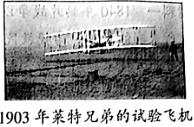
——摘编自吴建《新闻摄影学》
（1）依据材料一，概括照片的史料价值。
材料二 以下照片记录了美国历史上的一场战争
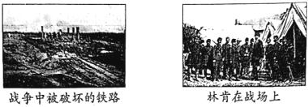
（2）依据材料一、材料二并结合所学，判断这场战争是 B ；（写字母）并运用两项证据说明判断理由。
A.美国独立战争
B.美国内战
材料三
| 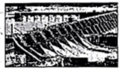 | | |
①经济大危机时期美国穷人居住的棚户区——“胡佛村” | ②新政期间，美国政府投资建设的田纳西水利工程 | ③1939年9月，德军以“闪电战”方式突袭波兰 | ④1940年，八路军在敌后战场发动百团大战 |
| 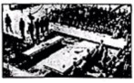 | | |
⑤1942年，美、英、苏、中等26个国家代表签署《联合国家宣言》 | ⑥1945年9月，在中国战区受降仪式上，侵华日军总司令在投降书上签字 | ⑦1947年，美国总统杜鲁门发表演说，提出的政策被称为“杜鲁门主义” | ⑧1955年，苏联和7个东欧社会主义国家缔结《华沙条约》 |
（3）史事的发生都有其前因后果。从材料三中选择两张照片，参照示例，对其所反映史事的因果关系进行说明。（示例组合除外）
示例：照片③⑤。
1939年9月，德军突袭波兰，第二次世界大战全面爆发。
1942年，美、英、苏、中等国代表签署《联合国家宣言》，世界反法西斯同盟正式形成。二战全面爆发后，激起了世界各国人民的反抗，全世界反法西斯国家建立同盟。
【分析】本题以文字、图片材料为背景依托，主要考查了照片的史料价值、美国南北战争、两次工业革命、经济危机与罗斯福新政、美国冷战政策等知识，掌握相关基础知识。
【解答】（1）依据材料一“人们开始尝试用摄影记录社会生活、重大事件（如图）等，永久保留，可信度强，“1903年莱特兄弟的试验飞机”照片的史料价值是可以记录重要历史场景、可靠地再现历史等。
（2）依据材料一、材料二并结合所学。结合所学知识可知。美国内战发生在19世纪中期；美国独立战争时期。美国内战发生在19世纪中期；美国独立战争时期。
（3）史事的发生都有其前因后果。从材料三中选择照片⑦⑧，美国总统杜鲁门发表演说；⑧1955年；这两张照片与美国的冷战政策有关。1947年，标志着冷战开始，美国建立了北大西洋公约组织，成立了华沙条约组织，两极格局形成。
故答案为：
（1）记录重要历史场景；直观。
（2）B；理由：林肯是美国内战时期的总统，此时摄影技术已经诞生，摄影技术还没有出现，此时铁路已经出现，铁路还没有出现。
（3）照片⑦⑧。1947年，标志着冷战开始，美国建立了北大西洋公约组织，成立了华沙条约组织，两极格局形成。
【点评】本题主要考查学生综合运用所学知识解决问题的能力。理解并识记照片的史料价值、美国南北战争、两次工业革命、经济危机与罗斯福新政、美国冷战政策等知识。
24．（10分）某校历史社团开展“探寻北京城市遗址公园”主题实践活动。
活动一 社团学生考察遗址公园
①元大都城垣遗址公园 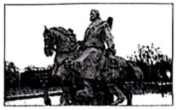 | ②明城墙遗址公园 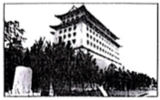 | ③金中都公园 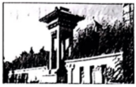 |
围绕元大都土城墙遗址修建。公园里面有以战马群为核心的“鞍疆盛世”景观，有忽必烈、马可•波罗等人物雕像，还有体现交易中使用的大量铜钱的雕塑 | 以明代城墙为核心而建，其中东便门的一段城墙保存相对完整，城墙内为夯土外包砖石。东南角楼高约30米 | 以“金中都”建城文化为主题，选址于当年皇城故址。仿建金代建筑，体现了“唐风宋制”的营建法式 |
（1）社团学生按照朝代顺序考察遗址公园，顺序应为 ③①② 。（写序号）
依据材料并结合所学，参照示例，写出一处遗址公园体现的历史。（示例除外）
示例：②明朝时期，朱棣迁都北京。角楼反映了当时的北京城具有强大的军事防御功能。
活动二 社团学生依据圆明园遗址公园相关材料绘制了如图示意图
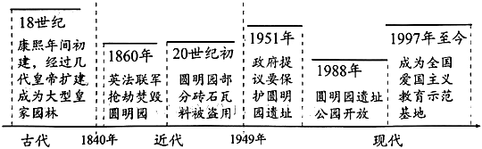
（2）依据示意图，概括圆明园从古代到近代，再到现代的变化。分析这一公园的历史价值。
活动三 社团学生依据路县故城遗址公园相关资料进行研讨
路县故城是2016年北京城市副中心建设前期考古勘探时发现的西汉遗址。汉高祖时设县于此，因与秦始皇修筑的道路（驰道）相邻，出土文物丰富。发现之初，副中心规划基本成形，并有铁路线穿过。因为遗址的发现，政府对已有规划进行调整，北京市政府正式批准对路县故城城址进行原址保护，建立遗址公园。
——摘编自《北京城市副中心报》，2023年4月第4期
（3）依据材料并结合所学，分析路县名称由来所反映的时代特征。谈谈对这一城市规划调整的看法并说明理由。
【分析】本题以三则材料为背景依托，考查金元明的建立、第二次鸦片战争。
【解答】（1）顺序：根据所学，金存在时间是1115年﹣1234年；明存在时间是1368年﹣1644年。历史：根据所学可知，定都大都，元大都是一个对外开放的大都市。③金迁都燕京。建城过程中吸收中原文化。
（2）变化：根据材料示意图，可知圆明园从古代到近代，再到现代的遗址公园，圆明园承载了古代皇家园林艺术等传统文化。
（3）特征：根据材料“汉高祖时设县于此，因与秦始皇修筑的道路（驰道）相邻。”可知，结合所学可知，并为巩固统治采取了一系列措施。可知。理由：这一城市规划调整合理，传承了历史文化，进一步促进城市发展。
故答案为：
（1）顺序：③①②。历史：①忽必烈建立元朝。完成统一；商业繁荣，改名为中都，体现了民族交融。
（2）变化：从古代大型皇家园林到近代的废墟，再到现代的遗址公园；见证了近代屈辱的历史等。
（3）特征：统一多民族国家的建立与巩固。理由：这一城市规划调整合理，传承了历史文化，进一步促进城市发展。
【点评】本题考查准确解读材料信息的能力，考查灵活运用所学知识解决问题的能力，熟记金元明的建立、第二次鸦片战争相关知识。
声明：试题解析著作权属菁优网所有，未经书面同意，不得复制发布日期：2023/8/5 7:16:22；用户：周；邮箱：854178494@qq.com；学号：4219671